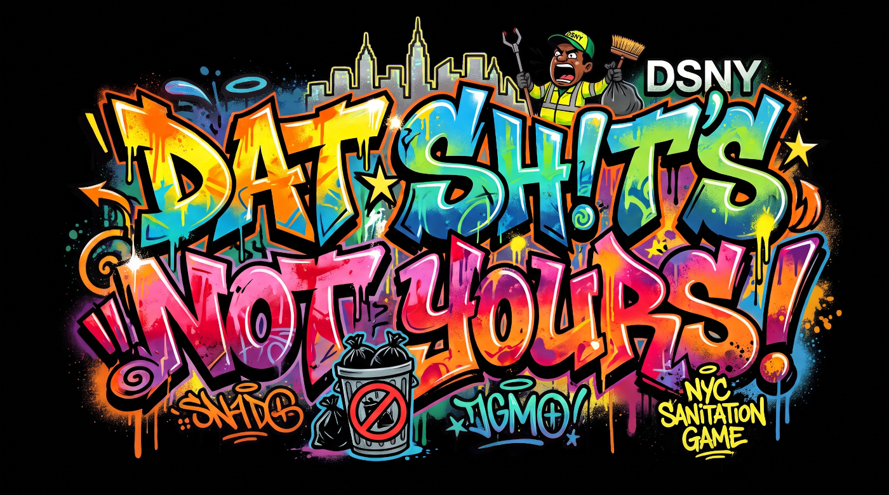

SCORE $
000000
STREET CASH $
000000
ROUTE 1 - MANHATTAN UPTOWN
SUPERVISOR WRITE-UPS
HANDS FREE
TAP TO TUNE IN
MUTE
SKIP »
REC
FIAT CAM 01
--/--/----
--:--:--
ACT
📱
ROTATE YOUR DEVICE
PLAY IN LANDSCAPE · FULLSCREEN

START SHIFT
SUSPENDED BY DSNY
3 WRITE-UPS - SHIFT TERMINATED
FINAL SCORE $
000000
HI-SCORE $
000000
RESTART SHIFT